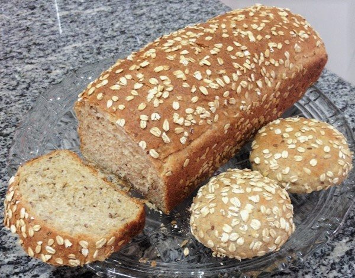

Salgados · Massas fritas/assadas
Pão integral com malte

Ingredientes
- 1 xícara de leite
- 1 xícara de água
- 3 colheres (sopa) de manteiga ou óleo
- 1 colher (sopa) de sal
- 2 tabletes de fermento biológico fresco
- 1 colher (chá) de açúcar
- ½ xícara de água morna
- 3 colheres (sopa) de malte de cereais, mel ou glucose de milho
- 4 a 5 xícaras de farinha de trigo integral fina
Modo de preparo
- Numa panela, coloque o leite, a água, a manteiga e o sal. Leve ao fogo para aquecer, sem deixar ferver. Retire do fogo e deixe esfriar.
- Numa xícara de chá, coloque o fermento, o açúcar e a água. Deixe em lugar protegido até espumar.
- Passe o leite para uma tigela e adicione o fermento. Misture bem. Acrescente o malte de cereais e misture novamente.
- Junte a farinha, aos poucos, mexendo bem. Quando a massa começar a desprender da tigela, passe para uma superfície de trabalho enfarinhada e amasse durante 10 minutos, até a massa ficar elástica.
- Coloque a massa numa tigela untada, cubra com filme plástico e deixe descansar até dobrar de tamanho.
- Achate a massa e divida-a em duas partes. Amasse um pouco cada pedaço de massa e abra até obter um retângulo com 3 cm de espessura.
- Dê o formato ao pão: junte as duas extremidades da massa e aperte uma contra a outra para grudar.
- Coloque os pães com as emendas da massa viradas para baixo em duas fôrmas untadas com manteiga. Cubra com um pano de prato e deixe crescer em local protegido por 1 hora, até a massa atingir a borda das fôrmas.
- Preaqueça o forno em temperatura alta (220 °C). Asse os pães por 10 minutos. Reduza a temperatura para média (180 °C) e asse por mais 25 minutos, ou até dourar. Retire do forno, desenforme, deixe esfriar e congele.
Observação
Verifique se o pão está assado: desenforme, bata no lado inferior e, se fizer um ruído oco, estará no ponto. Congelamento: embrulhe os pães já frios em papel-alumínio e depois em filme plástico ou saco plástico que feche hermeticamente; etiquete e leve ao freezer. Descongelamento: retire o filme plástico e leve os pães, embrulhados no papel-alumínio, ao forno para descongelar e aquecer.